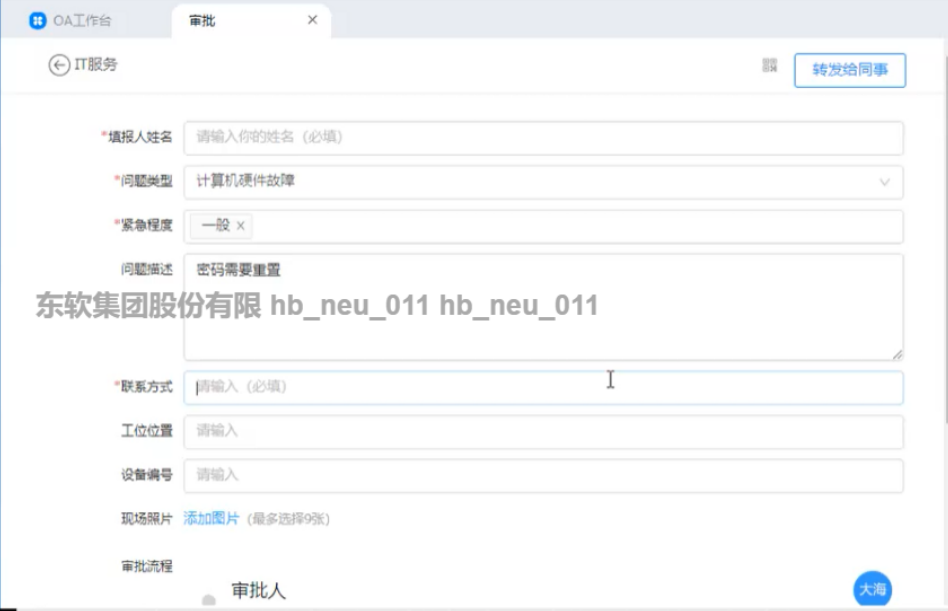

场景5：设备维修
1.角色
1.报修人：小白
2.行政部：蔡部长
3.技术部：俎部长
4.技术部维护人员：小刘
5.主管领导：于主管
2.流程
1.报修人钉钉填写申请
2.行政部审核，通知技术部
3.技术部派出维护人员并填写"设备维护表"
4.设备无法修复时，报修人填写"设备报废申请表"，技术部门验证后由主管领导审批。
3.草稿
1.小白在开发时电脑发生黑屏，自己多次重启后无果，在旁人劝说下，打算申请维修，于是在钉钉上先进行了申请保修的填写。
2.蔡部长在钉钉上进行了审核然后通知了技术部门。
3.俎组长收到了行政部的通知后派出了维护人员小刘去维修，小刘并且填写了设备维护表。在维修中发现设备已经无法修复后。让小白填写设备报废申请表。
4.小白填写了设备报废申请表，并交给了技术部门俎组长。
5.俎组长进行了验证，确实需要报废后然后去申请于主管意见。
6.于主管审批成功
4.所需材料
